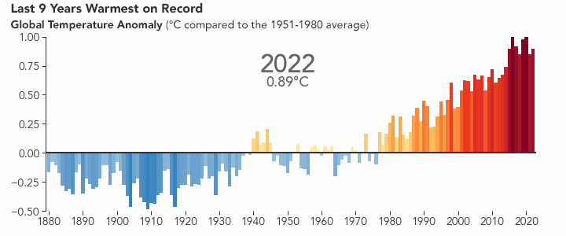
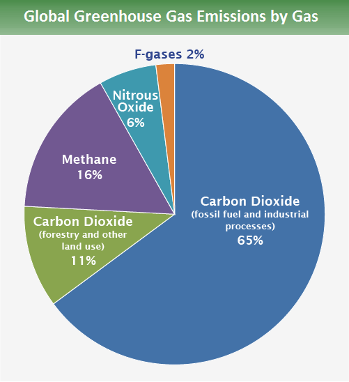
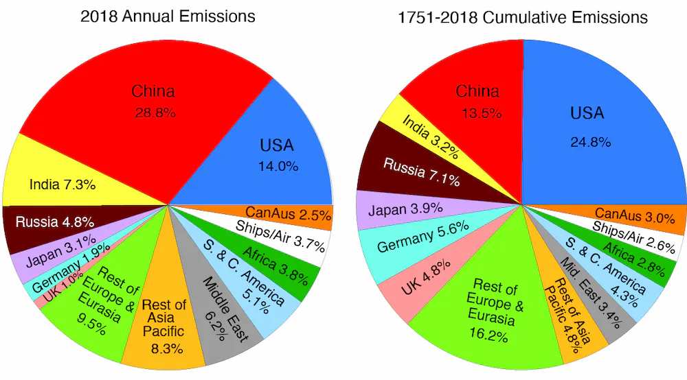

Power vs. Planet: Global Climate Change on International Relations
Introduction
Temperatures climbing, sea levels rising, coastal land receding, polar ice caps melting, biodiversity diminishing, and the risk of droughts, floods, hurricanes, and tornadoes increasing. This is the world we've come to live in, and it's only the beginning. Global climate change has been the phrase on everyone's lips for a while now, yet the threat is still very much real, and the problem is still very much getting worse. Countless data has been presented to prove that this is a problem, and it needs attention, yet politicians and corporations continue to insist it is false. What could be the motivation behind this spreading of misinformation? Why haven't the great powers of the world better allied themselves in the issue which affects the entire planet? And what could the consequences of this be?
First, let us define climate change. Climate change is a “long-term change in the average weather patterns that have come to define Earth's local, regional and global climates” (NASA, 2023). Global warming, on the other hand, is the “long-term heating of Earth's surface observed since the pre-industrial period (between 1850 and 1900) due to human activities, primarily fossil fuel burning, which increases heat-trapping greenhouse gas levels in Earth's atmosphere” (NASA, 2023). These two terms are often used interchangeably, but they are not the same. Global warming only includes the rising of temperature on the surface of the planet due to the greenhouse effect, while climate change discusses this warming as well as all of the other effects the change in climate could have on the environment of a region of the world, including rising sea levels and adverse changes in weather. Global climate change then, the most accurate scientifically accepted term, discusses climate change on a global level, emphasizing this is a problem that affects every single human being on this earth (NASA, 2023).
The Earth's average temperature has been increasing. “Since the pre-industrial period, human activities are estimated to have increased Earth's global average temperature by about 1 degree Celsius…[and] currently increasing by more than 0.2 degrees Celsius… per decade” (NASA, 2023). Below is a chart illustrating this trend.

Causes of Global Climate Change
There are many causes of global climate change. Some of which include deforestation, agriculture, and farming livestock, but the biggest contributor is the burning of fossil fuels. Generating electricity, using transportation, and the manufacturing of goods all require the burning of fossil fuels. This causes the greenhouse effect, which involves greenhouse gasses getting trapped in Earth's atmosphere and reflecting back onto the surface of the planet, warming it. As seen in the chart below, created by the Environmental Protection Agency, 65% of the greenhouse gas emissions that contribute to climate change result from fossil fuel usage and industrial processes (EPA, 2023).

The EPA also breaks down United States greenhouse gas emissions by economic sector (EPA, 2023). Of the five categories, which include transportation, electric power, industry, commercial and residential, and agriculture, transportation has the plurality lead with 28% of greenhouse gas emissions. The majority of transportation-based emissions come from the usage of personal vehicles, with trucks, planes and trains trailing behind. Electric power is the second most significant sector, making up 25% of national GHG emissions. These are major factors in the federal push for electric cars making up an increased market share, potentially up to all vehicles, and more energy used being sourced from clean and renewable energy.
Implications for the Future
The implications that climate change has on the Earth's future can already be seen, and there are many consequences that nations would have to face if GHG emissions aren't slowed down. As is shown in Figure 1, the average global temperature has grown about 1 degree Celsius, or 1.8 degrees Fahrenheit, and this trend is only continuing to accelerate. Rising temperatures lead to melting of the ice caps, which causes an increase in the global sea level, which in turn is the cause of more devastating flooding. This increased global temperature has also been linked to storms such as hurricanes becoming more powerful. This is especially alarming for the Caribbean and coastal southeast United States, both of which are low sea-level locations with a propensity for getting hit by hurricanes.
Marine life will also be at high risk of devastation if GHG emissions aren't decreased, from both higher sea levels and increased water acidity due to carbon dioxide absorption (NOAA, 2021). Coral reefs, which serve as ecosystems for thousands of species, will become more vulnerable to damage with warmer waters, stronger hurricanes, and rising sea levels. The destruction of coral reef ecosystems and the potential demise of the various species that live within them would be an ecological disaster.
Humans will suffer greatly from climate change in more direct ways as well. Thousands of more people will die annually from heat-related deaths than as of right now, and increased sea levels will threaten coastal regions, which hold a great percentage of the global population, with potentially going underwater. Regions in the United States such as South Florida and New York City could have significant portions partially underwater, leading to displacement and billions of dollars of unrecoverable damages. Very few parts of the global ecosystem would be spared from the effects of climate change, and humans are no exception.
Global Concerns
The problem with the burning of fossil fuels being the largest contributor to global climate change is that it also happens to be one of the top contributors to a country's economy. Many countries rely on the burning of these fossil fuels for both the needs of the country and for trade with other countries. Whether it be the production of trading goods, food production for domestic and foreign trade and use, transportation of goods, or the trading of fossil fuels themselves (such as oil), many countries rely on this environmentally unfriendly practice.
Among the countries which rely the most on the burning of fossil fuels as of right now are China, the United States, India, Russia, and Japan, in that order. In 2018, China produced 28.8% of all carbon emissions in the world, followed by the United States at 14%, India at 7.3%, Russia at 4.8%, and Japan at 3.1%. This contrasts, however, with the cumulative carbon emissions since the industrial revolution. Cumulatively, the United States has produced 24.8% of all carbon emissions in the world from 1751 to 2018, followed by China at 13.5%, Russia at 7.1%, Japan at 3.9%, and India at 3.2% (Trenberth, 2023).
These statistics (shown in the figure below) prove that both China and India have increased their carbon emissions significantly as of late, having been able to surpass nations which previously polluted more. This demonstrates that, as of lately, China and India have likely both benefited the most from their increases in pollution, seeing as how both economies have bloomed in the latest years. With such economic growth, it can be difficult for a country to set aside their potential for increased prosperity in order to tackle the problem of global climate change.

There is also a trend demonstrating that the greatest powers in the world are also the greatest polluters. This likely signifies that power is gained from the businesses related with the burning of fossil fuels, which is surely motivation to continue to do so. Even more so with concern to the great power competition. We have seen China's industry and economy grow tremendously over recent years, at a major cost to the environment. This vying for power against the United States has likely been a factor in China's attempt and success at recent growth.
International Relations
A major deterrent for countries aligning to combat global climate change is distrust in other nations. There is worry in regards to reliability and accountability in international agreements, because all countries are affected by this issue, but they all also have a stake in the implications if other countries refuse to adhere to agreements made to confront the issue. One country may benefit more from breaking an agreement, leaving the rest to lose their position in the great power competition. If a country is seen as unreliable or unwilling to cooperate, then that causes a debacle or impedance in the efforts to stop global climate change.
For example, in 2020, former President Donald Trump withdrew from the Paris Agreement due to his expressed beliefs that the United States shouldn't have to be in the treaty when they are not the biggest polluters, and when the greatest polluter, China, allegedly has too few restrictions in comparison to the United States. To which China responded that while it may be the greatest polluter now, the United States is still the country with the most pollution historically due to its earlier start in industrialization, all of which can be supported by Figure 3 above.
These recent actions of the United States under the presidency of Donald Trump have caused lasting harm to relations and agreements with other countries in regards to climate change. His withdrawal from the treaty marked the United States as a possibly unreliable partner, and even though President Joe Biden rejoined the following year, the incident proved that the US was vulnerable to intense changes of priorities from one presidency to the next, which could cause worries to other countries in agreements with the US, making it more difficult to create agreements with them, when they are one of the greatest polluters, to manage global climate change.
Conclusion
Global climate change is the long-term altering of the entire Earth's average weather patterns. It is a problem that concerns everyone, yet seems to be of less concern to certain countries due to their greed for power, leading to the use of misinformation to try to persuade the public into believing climate change is not a problem but instead a hoax that does not require attention, in order for such countries to continue to pollute as they like and prosper from it.
Despite the lack of concern, global climate change can have serious consequences, including increasing temperatures, rising sea levels, loss of coastal land, melting of polar ice caps, loss of biodiversity, and increasing risk of droughts, floods, hurricanes, and tornadoes. The greatest contributor to global climate change is the burning of fossil fuels, which are used all throughout the world for generating electricity, transporting products, and manufacturing goods. This causes countries to hesitate at dealing with the issue of global climate change at risk of hurting their own economies and their international power. Countries such as China, which is the greatest manufacturer and polluter of the world currently, Russia, which is one of the greatest distributors of oil in the world, and the United States, which have one of the greatest carbon footprints per person in the world, all have significant roles in the worsening of global climate change, but also have the most at stake if they were to better restrict or eliminate their emissions.
Global climate change will continue to grow as a problem that will challenge the human race if not attended to. Due to the state of the world today, it is likely that global warming will only continue to get worse until it is absolutely necessary to intervene due to the personal agendas of independent nations. Some countries profit more from not joining the movement to help the planet, which makes it difficult for them to cooperate in any efforts made to reverse global warming.
There is a trend implicating the most powerful nations are also the greatest polluters, meaning cooperating in any effort of this kind would require a sacrifice on their part, which could jeopardize their position in the great power competition. If certain countries choose to adhere, then others that do not would possibly benefit and raise their position on global power. A strict global agreement would need to be made between the great powers in order for real change to happen but due to the personal interests of each country, this seems unlikely as of right now.
Resources
- National Oceanic and Atmospheric Administration. (2021, August 1). Climate change impacts. NOAA. Retrieved May 5, 2023, from https://www.noaa.gov/education/resource-collections/climate/climate-change-impacts
- Environmental Protection Agency. (2023, February 15). Global Greenhouse Gas Emissions Data. EPA. Retrieved May 5, 2023, from https://www.epa.gov/ghgemissions/global-greenhouse-gas-emissions-data
- Environmental Protection Agency. (2023, April 28). Sources of Greenhouse Gas Emissions. EPA. Retrieved May 5, 2023, from https://www.epa.gov/ghgemissions/sources-greenhouse-gas-emissions
- NASA. (2023, February 7). Overview: Weather, Global Warming and climate change. NASA. Retrieved May 4, 2023, from https://climate.nasa.gov/global-warming-vs-climate-change/
- NASA. (n.d.). What's in a name? Global warming vs. climate change. NASA. Retrieved May 4, 2023, from https://gpm.nasa.gov/education/articles/whats-name-global-warming-vs-climate-change
- NASA. (n.d.). World of change: Global temperatures. NASA. Retrieved May 4, 2023, from https://earthobservatory.nasa.gov/world-of-change/global-temperatures
- Trenberth, K. (2023, February 16). How not to solve the climate change problem. The Conversation. Retrieved May 5, 2023, from https://theconversation.com/how-not-to-solve-the-climate-change-problem-187222